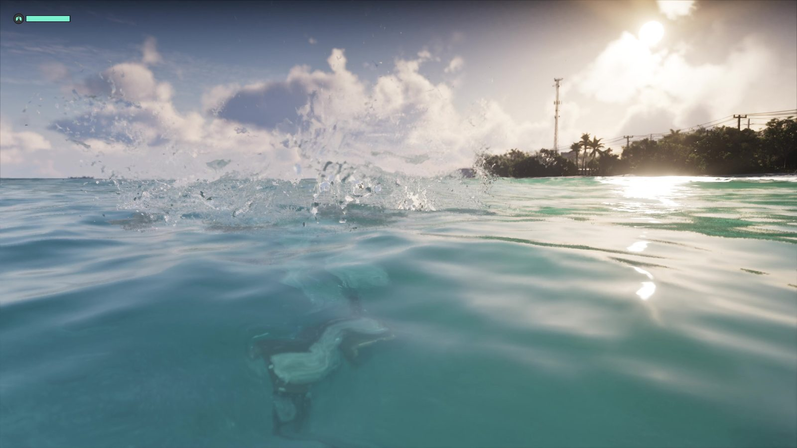
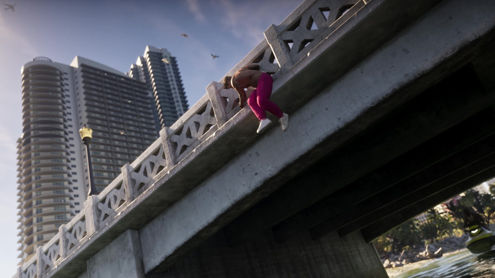

Слух: в GTA 6 потратили $300 млн на воду — с ураганами и сёрфингом
Обновлено:

- Слух: 20 инженеров и $200–300 млн — только на физику воды.
- К этому обещают приливы, наводнения, ураганы и сёрфинг.
- Источник — соцсеть-агрегатор VGT Gaming News, без доказательств.
- Официально подтверждена только продвинутая система погоды.
Не подтверждено. Rockstar не называла ни бюджет, ни ураганы, ни сёрфинг. Подтверждена только «продвинутая погода» (Game Informer).
Что говорят
Пересказ этого «слива» публиковал Sportskeeda. Источник — аккаунт VGT Gaming News, который собирает новости и слухи. Утверждения такие:
- у Rockstar была команда из 20 лучших инженеров только для физики воды;
- на воду потратили $200–300 млн;
- вода реагирует на погоду: приливы, наводнения, ураганы;
- сёрфинг будет мини-игрой.
Сегодня слух снова разошёлся: Game Informer подтвердил продвинутую погоду, и многие решили, что остальное тоже правда.
Что известно на самом деле
| Утверждение | Статус |
|---|---|
| Продвинутая система погоды «по мотивам» Флориды | 🟢 Анонс Game Informer №382 |
| Ураганы и тропические штормы | 🟡 Не подтверждено. TweakTown: «возможны, но Rockstar конкретные явления не называла» |
| Наводнения и приливы | 🟡 Официально не упоминались |
| Сёрфинг | 🟡 Не показан ни в трейлерах, ни в «Расширенном показе» |
| 20 инженеров и $200–300 млн на воду | 🔴 Нет источника. Rockstar не раскрывает бюджеты |
Бюджет GTA V часто называют как $265 млн. Эта цифра — оценка шотландской прессы 2013 года, Rockstar её не подтверждала. Получается, что «слив» приписывает одной только воде в GTA 6 целый бюджет прошлой части. Чем круглее и громче цифра без источника, тем меньше ей стоит верить.
Что вода в игре точно есть и выглядит серьёзно, видно по официальному видео: прыжок с пирса и погружение, каяк, аэроглиссер, лодки, рыбалка (все занятия — Чек-лист: чем займусь в GTA 6 первым). Но это вода в хорошую погоду. Шторм Rockstar пока не показывала ни разу.

Небо над Keys темнеет за полчаса. Ветер гнёт пальмы, по радио диктор просит не выходить на дамбу, а волны перехлёстывают через дорогу. Ты стоишь у машины и решаешь, ехать сейчас или ждать. Пока это только наша фантазия, но именно этого ждут фанаты.
Наш вывод
🟡 Не подтверждено. Погода — да, официально. Ураганы, наводнения и сёрфинг — пока ожидания. Цифры бюджета — выдумка без источника. Как погода работала в прошлых GTA и почему тема ураганов для серии не новая — в сравнении Погода в GTA 5 и GTA 6: от смога Лос-Сантоса к флоридским штормам. Если в номере Game Informer появятся конкретные явления, обновим статус.
Источники: Game Informer (анонс №382); TweakTown (28.09.2026); Dexerto; Sportskeeda (пересказ слуха VGT Gaming News); The Scotsman (оценка бюджета GTA V, 2013).